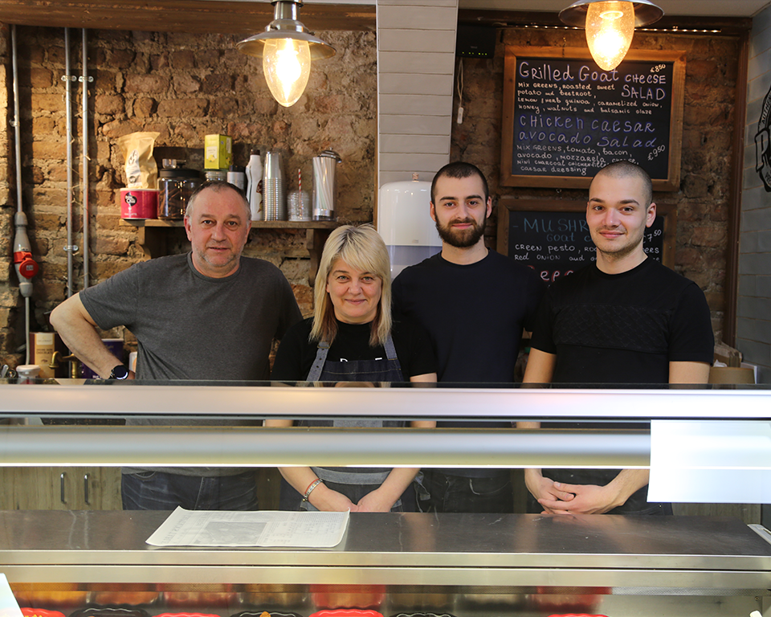

Our Story
We arrived on Pearse Street in 2010. Since then, the whole family has gotten involved. With a great understanding of excellent food Nelly and Yancho started the restaurant to offer Dublin a new gold standard in dining. Not long after Des and Luys, thier sons, joined in to help meet and serve fresh faces everyday.
